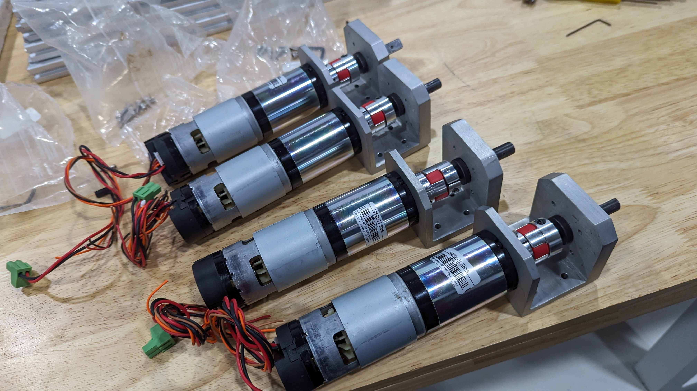
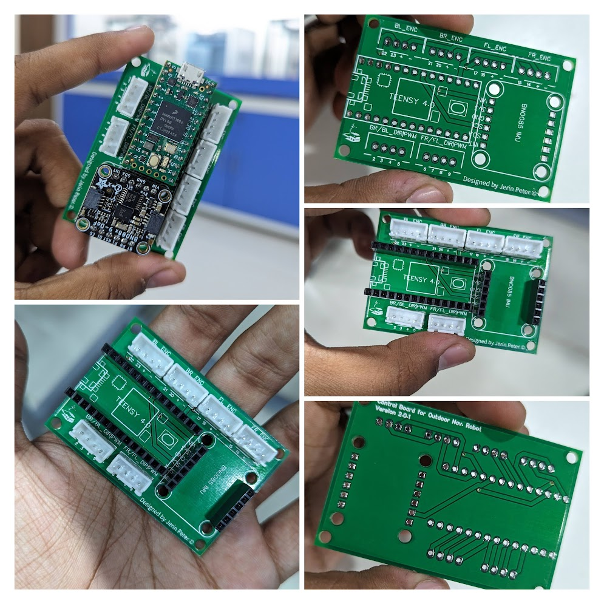
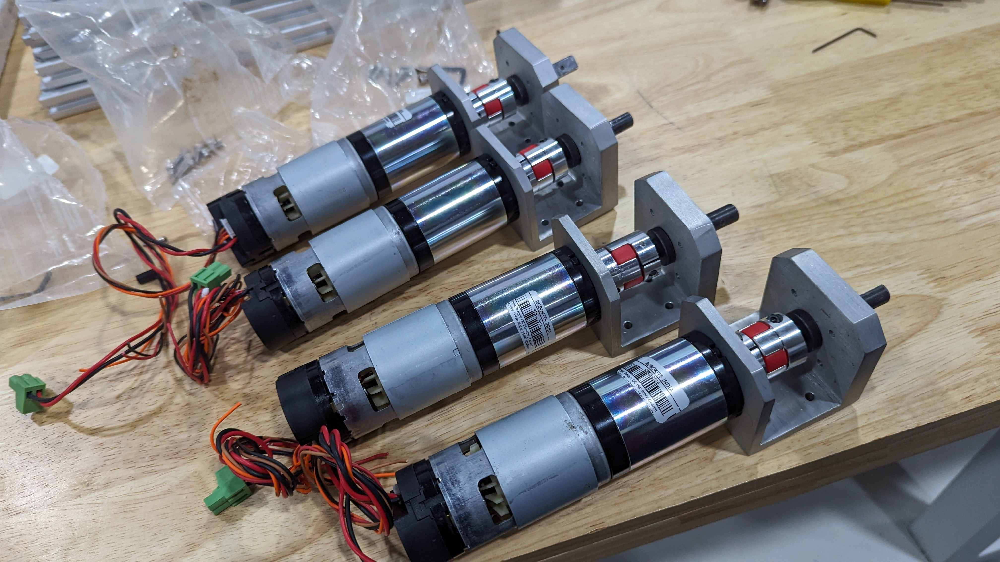
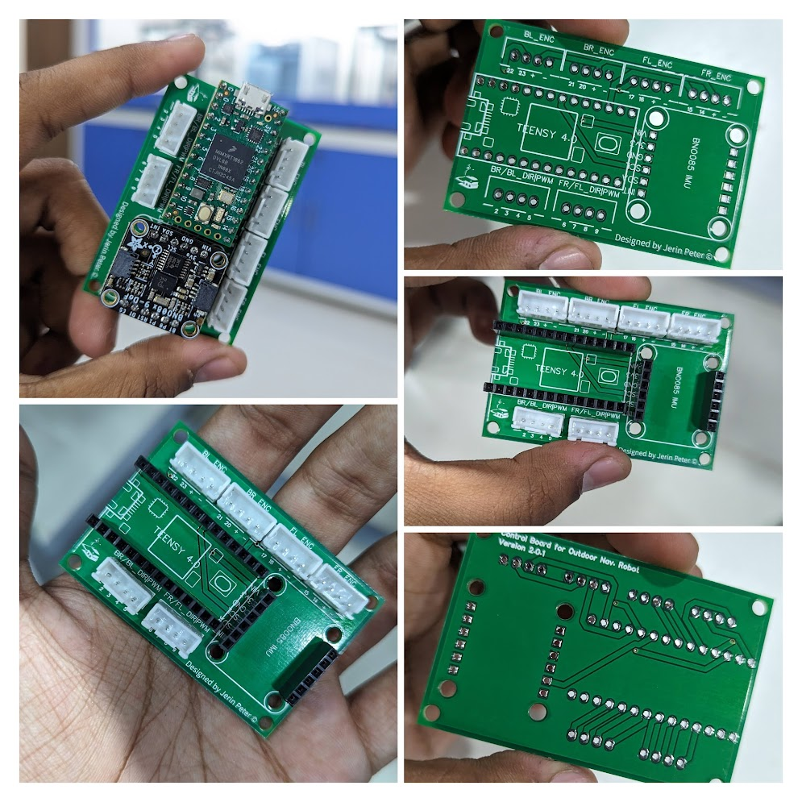
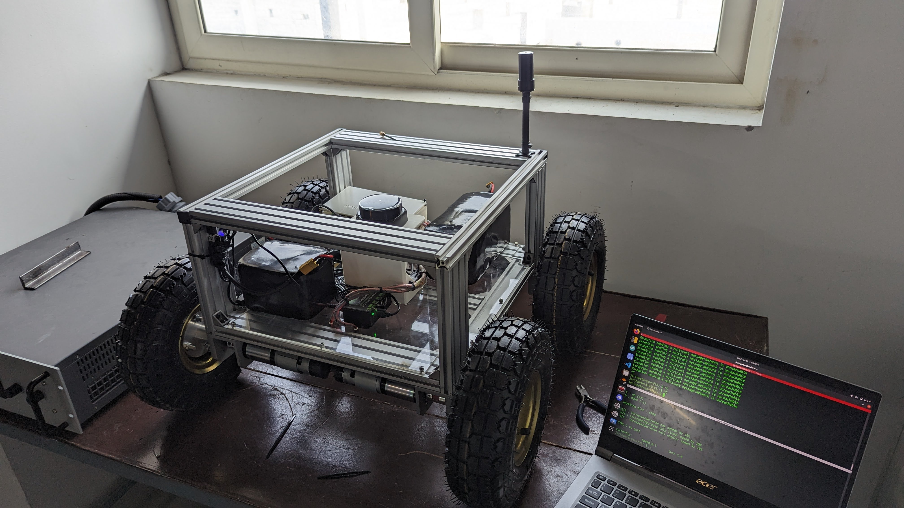
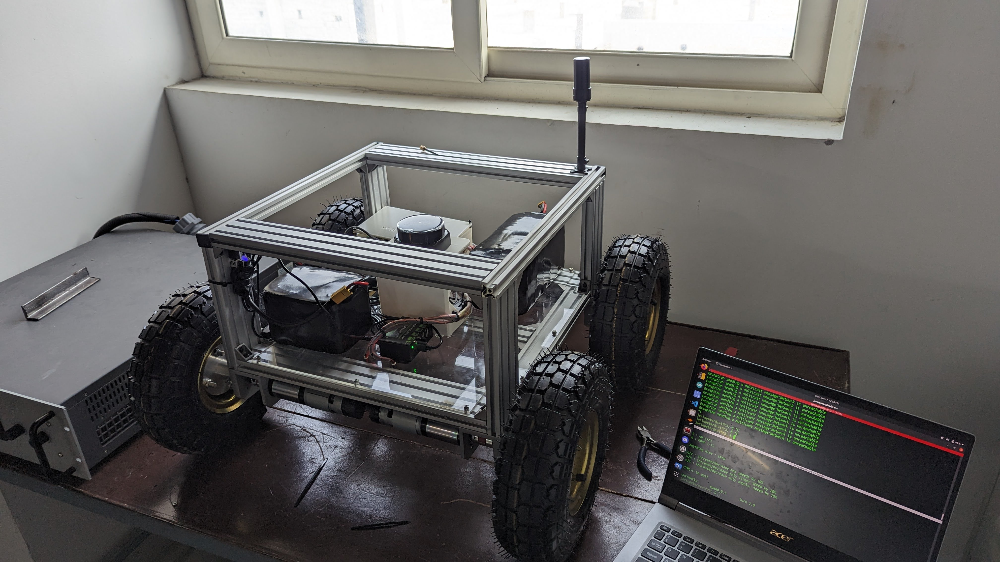

Autonomous Outdoor Navigation Robot
Robust RTK-Based Navigation for Dynamic Environments
Overview: This project details the development of a large-scale outdoor navigation robot featuring inflatable tyres and a lightweight aluminium extrusion frame. Designed in Fusion 360, the robot integrates advanced sensor suites and an RTK-based GPS system for precise outdoor localization and navigation.

The Design
Abstract
This project focuses on developing an autonomous outdoor navigation robot capable of operating in complex, GPS-restricted environments. The system utilizes a Raspberry Pi 4 as the central processor, integrated with an RPlidar S2 for long-range outdoor scanning and a Bosch BNO055 IMU for inertial measurement. A robust RTK solution, featuring Ardusimple RTK2B boards and an innovative NTRIP setup via Rtk2go.com, provides high-precision positioning by fusing data from multiple sensor sources.
Introduction
Autonomous outdoor navigation poses unique challenges, particularly in dynamic and GPS-restricted environments. This project addresses these challenges by integrating low-cost hardware with advanced sensor fusion and RTK-based positioning techniques. The robot’s mechanical design—featuring inflatable tyres for improved terrain adaptability and an aluminium extrusion frame for structural rigidity—ensures robust performance. Using a Raspberry Pi 4 running ROS, the system leverages state-of-the-art mapping and navigation algorithms to autonomously traverse complex outdoor terrains.
System Architecture
The following diagram illustrates the complete RTK/NTRIP setup. At the base station, a GPS board (with its antenna) and an RTK GPS module provide correction data via a telemetry module (TX). A Pi Zero W with a telemetry receiver (RX) collects these signals and uploads the RTCM data to an NTRIP server (hosted on rtk2go.com). On the robot side, a Raspberry Pi 4 downloads the RTCM corrections from the internet and sends them via USB to the RTK GPS module (RTK2B board), which outputs highly accurate positioning data.
Base Station Setup
The RTK base station consists of a GPS board paired with a high-gain antenna and a telemetry module (Tx) that continuously transmits correction data (typically on top of a building). A Pi Zero W, deployed at a remote location that has internet access, receives these signals via an attached receiver module. This Pi Zero W then uploads RTCM correction data to an NTRIP server hosted on Rtk2go.com. This remote setup allows for centralized correction data to be made available over the internet.
At the robot end, the Raspberry Pi 4—connected to the internet—downloads the RTCM data from the NTRIP server and pushes it via USB to the RTK GPS module. The RTK2B board within the module processes these corrections internally and outputs highly accurate positional data.
Robot Setup and Software Integration
The robot is powered by a Raspberry Pi 4 running ROS, which integrates data from an RPlidar S2 and a Bosch BNO055 IMU to create a real-time map of its surroundings. The RTK corrections obtained via the NTRIP server are fused with lidar and inertial data using the robot_localization package, ensuring robust and precise localization. Waypoints defined in Mapviz are then used by the move_base node and TEB planner to autonomously guide the robot to its destination.
 



 

Experimental Validation
Field tests demonstrated that the integration of RTK data significantly reduced odometry errors, enabling the robot to achieve centimeter-level accuracy in waypoint tracking. The robust sensor fusion and ROS-based navigation stack allowed the robot to navigate complex outdoor environments reliably.
Conclusion
The developed autonomous outdoor navigation robot effectively integrates RTK-based positioning with advanced sensor fusion techniques, providing precise and reliable navigation in dynamic outdoor environments. This project highlights the feasibility of using low-cost hardware and innovative telemetry solutions for high-accuracy outdoor localization. Future improvements will focus on incorporating additional sensors and further optimizing the navigation algorithms.
Future Scope
- Integration of vision-based sensors for enhanced obstacle detection.
- Optimization of sensor fusion algorithms for lower latency and improved accuracy.
- Expansion of the navigation stack for complex mission planning and autonomous decision-making.
- Scaling the system for industrial and commercial applications in harsh outdoor conditions.
For More Photos and Videos Visit
Google Photos